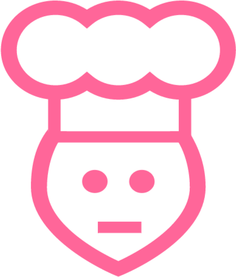

<ion-side-menus cache-view="false">
  <ion-side-menu-content class="post-size-14px">
    <ion-nav-bar class="bar bar-assertive">
      <ion-nav-back-button>
      </ion-nav-back-button>
      <ion-nav-buttons side="left">
        <button class="button button-icon button-clear ion-android-contact" menu-toggle="left">
        </button>
      </ion-nav-buttons>
    </ion-nav-bar>
    <ion-nav-view name="menuContent"></ion-nav-view>
  </ion-side-menu-content>

  <ion-side-menu side="left" class="main-menu" expose-aside-when="large">
    <ion-content>
      <ion-list ng-show="authentication">
        <ion-item class="heading-item item item-avatar" nav-clear menu-close ui-sref="app.profile">
          
          <h2 class="greeting">Hi {{authentication.firstName}}</h2>
          <p class="message">Welcome back</p>
        </ion-item>
        <ion-item class="item-icon-left" nav-clear menu-close ui-sref="app.myFav">
          <i class="icon ion-heart"></i>
          <h2 class="menu-text">My Favourites</h2>
        </ion-item>
        <ion-item class="item-icon-left" nav-clear menu-close ui-sref="app.featuredRecipes({name:'Featured Recipes'})">
          <i class="icon ion-fork"></i>
          <h2 class="menu-text">Featured Recipes</h2>
        </ion-item>
        <ion-item class="item-icon-left" nav-clear menu-close ui-sref="app.groceryList({name:'Grocery List'})">
          <i class="icon ion-document-text"></i>
          <h2 class="menu-text">Grocery List</h2>
        </ion-item>
        <ion-item class="item-icon-left" nav-clear menu-close ui-sref="app.myCalendarPlan({name:'My Meal Plan'})">
          <i class="icon ion-calendar"></i>
          <h2 class="menu-text">My Meal Plan</h2>
        </ion-item>
        <ion-item class="item-icon-left" nav-clear menu-close ui-sref="app.settings({name:'Preferences'})">
          <i class="icon ion-gear-a"></i>
          <h2 class="menu-text">Preferences</h2>
        </ion-item>
        <ion-item class="item-icon-left" nav-clear menu-close>
          <div ng-show="authentication" ng-click="signout()"><i class="icon ion-log-out"></i>
            <h2 class="menu-text" style="color:grey">SignOut</h2>
          </div>
        </ion-item>

      </ion-list>
      <ion-list ng-hide="authentication">
        <ion-item nav-clear menu-close class="item" style="background-color:#606060">
          <div align="middle"> </div>
        </ion-item>

        <ion-item class="item-icon-left" nav-clear menu-close ui-sref="app.myCalendarPlan">
          <h2 class="menu-text">About ReciFlix</h2>
        </ion-item>

        <ion-item class="item-icon-left" nav-clear menu-close ui-sref="app.myCalendarPlan">
          <h2 class="menu-text">Rate this App</h2>
        </ion-item>

        <ion-item class="item-icon-left" nav-clear menu-close ui-sref="app.myCalendarPlan">
          <h2 class="menu-text">Why Signup or Login ?</h2>
        </ion-item>
        <ion-item class="item-icon-left" nav-clear menu-close>
          <div ui-sref="walkthrough">
            <i class="icon ion-log-in"></i>
            <h2 class="menu-text" style="color:green">Login or Create Account</h2>
          </div>
        </ion-item>
      </ion-list>
    </ion-content>
  </ion-side-menu>
</ion-side-menus>


<!--<ion-footer-bar align-title="left" class="bar-assertive">
  <div class="buttons button-clear" style="padding-left:20px" ui-sref="app.allCategories">
    <i class="icon ion-home" style="color:white;font-size:30px"></i>
  </div>
  <div class="buttons button-clear" ui-sref="app.search" style="padding-left:110px">
    <i class="icon ion-search" style="color:white;font-size:30px"></i>
  </div>
  <div class="buttons button-clear" ui-sref="app.myFav" style="padding-left:110px">
    <i class="icon ion-ios-briefcase" style="color:white;font-size:30px"></i>
  </div>
</ion-footer-bar>-->


<!--<ion-side-menus enable-menu-with-back-views="false">
	<ion-side-menu-content>
		<ion-nav-bar class="bar-assertive">
			<ion-nav-back-button>
			</ion-nav-back-button>

			<ion-nav-buttons side="left">
				<button class="button button-icon button-clear ion-android-contact" menu-toggle="left">
				</button>
			</ion-nav-buttons>
		</ion-nav-bar>
		<ion-nav-view name="menuContent">

			<div class="bar bar-footer item-input-inset bar-assertive">
				<label class="item-input-wrapper">
					<i class="icon ion-ios7-search placeholder-icon"></i>
					<input type="search" placeholder="Search">
				</label>
				<button class="button button-clear">
					<i class="ion-search"></i>
				</button>
			</div>

		</ion-nav-view>
	</ion-side-menu-content>

	<ion-side-menu side="left" expose-aside-when="large">
		<ion-header-bar class="bar-assertive">
			<h1 class="title">Left</h1>
		</ion-header-bar>
		<ion-content>
			<ion-list>
				<ion-item nav-clear menu-close ng-click="login()">
					Login
				</ion-item>
				<ion-item nav-clear menu-close href="#/app/search">
					Search
				</ion-item>
				<ion-item nav-clear menu-close href="#/app/browse">
					Browse
				</ion-item>
				<ion-item nav-clear menu-close href="#/app/playlists">
					Playlists
				</ion-item>
			</ion-list>
		</ion-content>
	</ion-side-menu>
</ion-side-menus>-->
